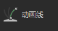
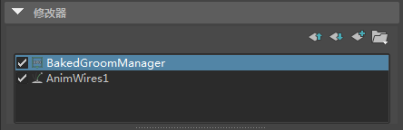

可以使用“动画线”(Anim Wires)修改器设置头发毛发修饰中的样条线或实例化样条线的动画。添加修改器后，您可以将头发系统附加到动画线，以便 Maya 使用 nHair 系统中的动态输出曲线来驱动动画线。
可以将“动画线”(Anim Wires)修改器用于样条线描述，而不管生成（由“生成基本体”(Generate the Primitives)设置）或控制（由“基本体的控制方式”(Control the Primitives by)设置）它们的方式如何。请参见使用样条线基本体创建头发或毛发。
- 将样条线定形为基本样式或姿势。请参见定形和控制 XGen 基本体。
- 在“XGen 编辑器”(XGen Editor)工具栏中，清除预览 (
 ) 并禁用“自动更新预览”(Update Preview Automatically)，使点贴图生成变得更快且贴图的控制标记更易于查看。
) 并禁用“自动更新预览”(Update Preview Automatically)，使点贴图生成变得更快且贴图的控制标记更易于查看。
添加“动画线”(Anim Wires)修改器和设置点贴图
- 在 XGen 编辑器中，单击“修改器”(Modifiers)选项卡。
- 单击此图标 以打开“添加修改器窗口”(Add Modifier Window)。
- 单击  以添加“动画线”(Anim Wires)修改器，然后单击“确定”(OK)。
“动画线”(Anim Wires)修改器将添加到描述的修改器堆栈。
现在指定修改器的控制贴图。
- 在“动画线修改器”(Anim Wires Modifier)下的“控制贴图”(Control Map)部分中，将“使用方向”(Use Dir)设置为以下项之一：
- 如果描述没有“成束”(Clumping)修改器，则设置为“默认”(Default)。
- 如果描述具有单个“成束”(Clumping)修改器，则设置为“成束”(Clumping)。
“动画线”(Anim Wires)修改器使用“成束”(Clumping)修改器中的点贴图。
- 如果描述具有多个“成束”(Clumping)修改器，则设置为“默认”(Default)。
- 单击“创建贴图”(Create Maps)。
- 在“生成贴图”(Generate Maps)窗口的“点”(Points)部分中，设置“密度”(Density)和用于生成点贴图的方法。XGen 将为贴图中的每个点创建动画线。
提示： 创建点贴图的最简单方法是，将点“密度”(Density)设置为一个介于 1 和 3 之间的值，然后单击“生成”(Generate)。如果描述具有导向，则还可以单击“导向”(Guide)在每个导向位置上创建点。
黄色点标记指示动画线的位置。
有关点贴图的详细信息，请参见为 XGen 修改器创建点贴图。
- 如果描述没有“成束”(Clumping)修改器，则单击“创建”(Create)。
Maya 将为动画线生成点贴图。现在可以生成输出曲线并附加 nHair 系统（请参见下文）。
如果描述具有一个或多个成束修改器，则必须为“动画线修改器”(Anim Wires Modifier)修改器指定控制贴图。
- 若要指定控制贴图，请在“贴图”(Maps)部分中，执行以下操作之一：
- 如果描述具有一个“成束”(Clumping)修改器，则启用“使用控制贴图”(Use Control Maps)。
- 如果描述具有多个“成束”(Clumping)修改器，则启用“使用控制贴图”(Use Control Maps)，并在“控制贴图”(Control Map)旁边，确保路径设置为 Clumping1，以便“动画线”(Anim Wires)使用来自堆栈中第一个成束修改器的控制贴图。
例如，将 Clumping2 替换为 Clumping1。
- 单击“创建”(Create)。
- （可选）在 XGen 编辑器的“控制贴图”(Control Map)下，单击“预览线”(Preview Wires)以显示动画线。
- （可选）若要提高动画样条线的播放性能并减少渲染时间，请将“修饰烘焙”(Groom Bake)修改器添加到修改器堆栈的顶部。

有关详细信息，请参见“修饰烘焙”(Groom Bake)修改器。
生成输出曲线和附加 nHair
- 在“控制贴图”(Control Map)部分中，选择“创建头发系统”(Create Hair System)。
- 在显示的“使曲线动力学化选项”(Make Curves Dynamic Options)窗口中，执行以下操作：
- 将“输出”(Output)设置为“NURBS 曲线”(NURBS Curves)。
- 请确保所有其他选项都处于启用状态。
- 单击“使曲线动力学化”(Make Curves Dynamic)。
动力学曲线现在将驱动动画线。
- 在“大纲视图”(Outliner)中，展开 hairSystemOutputCurve 组并选择输出曲线。
请注意，您必须分别选择各条曲线，而不是选择 hairSystemOutputCurve 组。
- 在“XGen 编辑器”(XGen Editor)的“控制贴图”(Control Map)部分中，单击 “附加头发系统”(Attach Hair System)。
动画线现在将继承曲线的动态动画（它由 Nucleus 解算器生成）。
- （可选）单击“预览区域”(Preview Regions)，以查看受修改器影响的区域。
- 回放到开始帧，然后播放动画。
注： 如果曲线不设置动画，则回放到开始帧，然后重新播放模拟。
- （可选）若要增加播放时间，请缓存 nHair，方法是在“大纲视图”(Outliner)中选择 hairSystem，然后在 FX 菜单集中，选择
 。
。
现在，通过将其他“修改器”(Modifiers)（如“风”(Wind)或“定向力”(Directional Force)修改器）应用于样条线，可以设置“动画线”(Anim Wires)的动画。
在基本姿势（初始帧）中带有修饰对象的线应该是静态的，这样便能存储引用线姿势。线动画能够在该初始帧状态之后开始。在渲染时，每个样条线都绑定到静态引用线，然后再制作成动画。请参见 XGen 面片。
有关设置 nHair 系统的初始状态的信息，请参见设置头发曲线位置和开始静止和当前位置曲线。